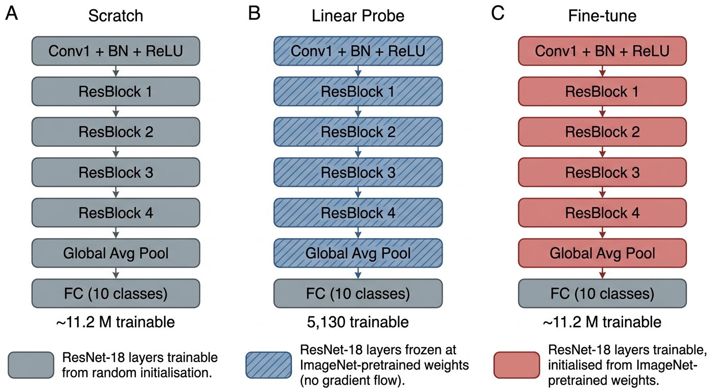
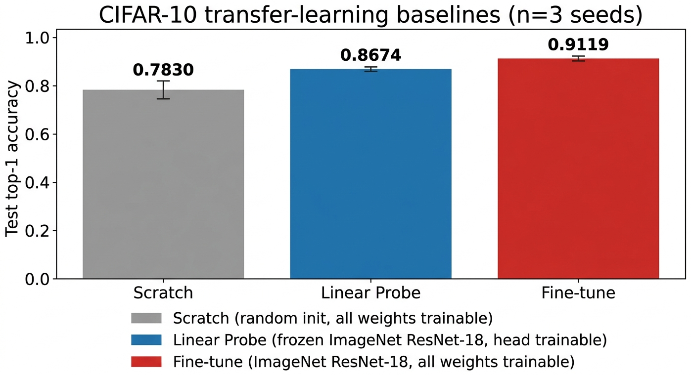
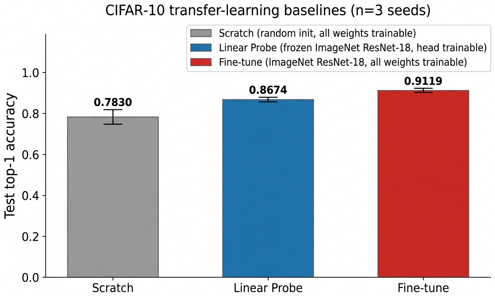
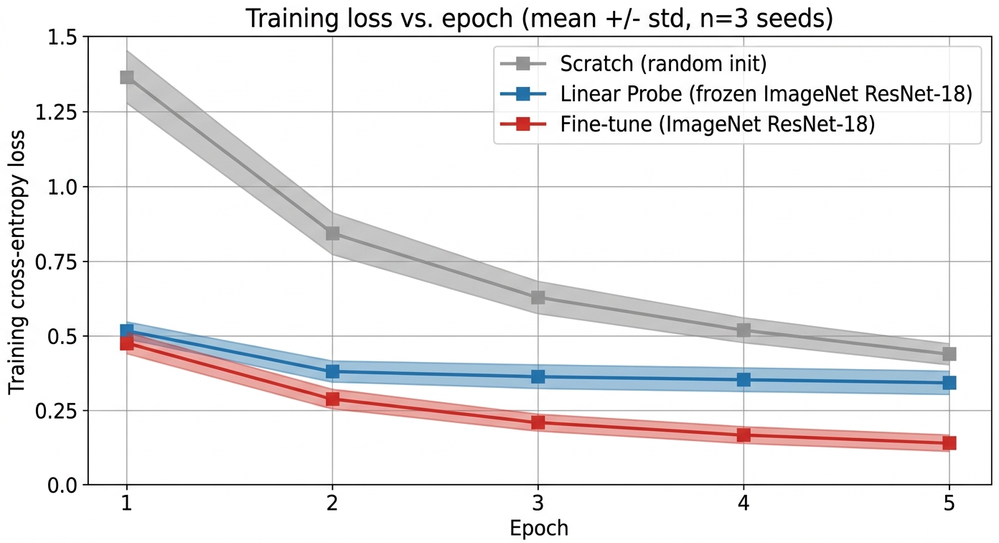

computer vision · transfer learning · reproducibility
Reuse versus Adaptation: Decomposing the ImageNet-to-CIFAR-10 Transfer Win for ResNet-18
A controlled three-condition decomposition of the ImageNet-to-CIFAR-10 transfer-learning win for ResNet-18: how much of the gain comes from reusing pretrained features and how much from adapting them.
01Abstract
Transfer learning from ImageNet has become a default first move for image classification on small natural-image datasets, but the accuracy gain is often reported as a single number rather than decomposed into the value of reusing pretrained features and the additional value of adapting those features to the downstream task. We quantify both contributions on CIFAR-10 by training the same ResNet-18 backbone under three carefully controlled conditions: random initialisation with all weights trainable; ImageNet-pretrained weights with the backbone frozen and a linear probe on a new 10-class head; and ImageNet-pretrained weights with full end-to-end fine-tuning. All three conditions share an identical 5-epoch training schedule, batch size, and 224×224 input pipeline on the official CIFAR-10 train and test splits, so any difference in test accuracy is attributable to initialisation and parameter freedom alone. Across three random seeds, we observe a strict ordering on every individual seed: the from-scratch baseline reaches 0.7830 ± 0.0244 test top-1 accuracy, the linear probe over frozen ImageNet features reaches 0.8674 ± 0.0016, and full fine-tuning reaches 0.9119 ± 0.0025. The linear-probe gain over scratch isolates the value of frozen transfer at +8.44 percentage points; the additional gain from fine-tuning isolates the value of adaptation at +4.45 percentage points. We also find that the pretrained conditions are an order of magnitude more stable across seeds than the from-scratch run, consistent with pretrained initialisations occupying a flatter region of the loss landscape under tight training budgets. Code, logs, and per-seed numbers accompanying these claims are released as a public repository (URL on the project site).
02Contributions
Three matched conditions
Same backbone, same schedule, same input pipeline. Only initialisation and parameter freedom vary, so accuracy gaps decompose cleanly.
Per-seed agreement
Strict ordering Scratch < Linear Probe < Fine-tune holds on every individual seed, not only on the mean.
Single-GPU reproducibility
Nine ResNet-18 trainings finish in well under thirty minutes on a single 16 GB A4000.
03How it works
We compare three transfer-learning strategies on a single ResNet-18 backbone, holding the training schedule, batch size, and CIFAR-10 input pipeline fixed across all three. Scratch trains a randomly initialised ResNet-18 end-to-end. Linear probe loads the public ImageNet-1K-pretrained ResNet-18, freezes the entire backbone (including BatchNorm running statistics), and trains only a new 10-class classifier head. Fine-tune loads the same pretrained checkpoint and lets every parameter update. Because the only differences between the three are initialisation and which parameters carry gradients, the per-condition test-accuracy gaps decompose the ImageNet-to-CIFAR-10 transfer-learning win into a feature-reuse term (Linear probe minus Scratch) and a feature-adaptation term (Fine-tune minus Linear probe).

04What we found
Across three random seeds, the strict ordering Scratch < Linear Probe < Fine-tune holds at every individual seed and in the mean. The from-scratch baseline reaches 0.7830 ± 0.0244, the linear probe over frozen ImageNet features reaches 0.8674 ± 0.0016, and full fine-tuning reaches 0.9119 ± 0.0025. Linear probing buys +8.44 percentage points over the from-scratch baseline; full fine-tuning buys a further +4.45 percentage points on top. The pretrained conditions are an order of magnitude tighter across seeds than the from-scratch run.



05Context
This is a workshop-grade single-GPU reproducibility study, not a state-of-the-art claim. We deliberately train for only five epochs and use only one backbone (ResNet-18) and one source domain (ImageNet-1K). The 5-epoch from-scratch number is below the literature ceiling for CIFAR-10 because longer schedules, hyperparameter search, and modern augmentation are explicitly out of scope. The reported gaps measure how quickly each strategy reaches a competent classifier under a tight compute budget, which is the regime in which the question of how useful transfer learning is is most often asked in practice.
06Where to go next
07Cite
@misc{mishra2026reuse,
title = {Reuse versus Adaptation: Decomposing the ImageNet-to-CIFAR-10 Transfer Win for ResNet-18},
author = {Vikash Chandra Mishra},
year = {2026},
url = {https://github.com/Vizuara-AI-Lab/paper-reuse-vs-adaptation-decomposing-imagenet-cifar-10}
}